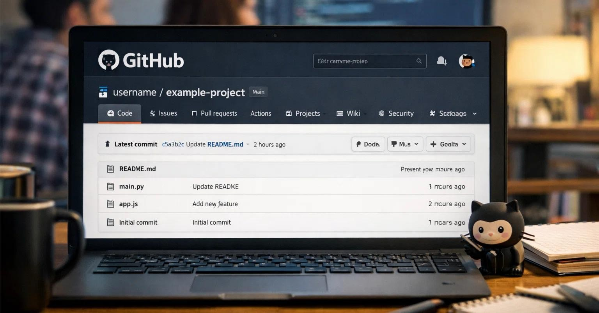
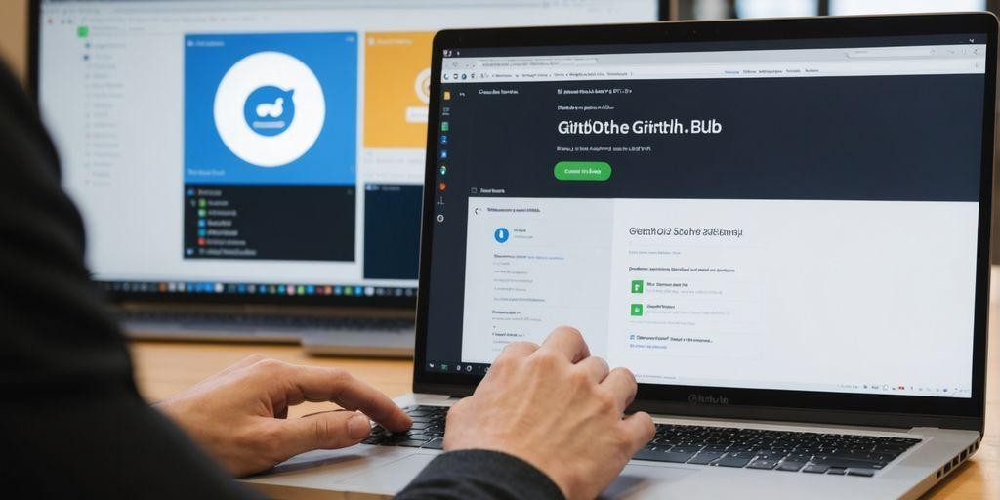
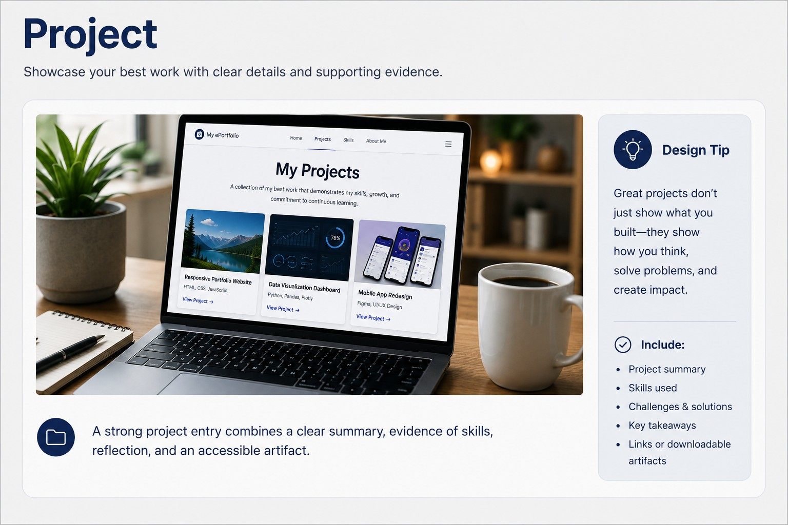

Create an ePortfolio that showcases your skills, projects, reflection, and professional growth.
Showcase your learning. Demonstrate your skills. Launch your career.
Every strong project you complete can become evidence of what you know and what you can do.
This lesson introduces the purpose of an ePortfolio and helps you prepare to build a professional
digital space that grows with you throughout your program.
30–45 minutesEstimated lesson time
15 sectionsShort, guided learning screens
1 first milestoneCreate your ePortfolio skeleton
Scenario:
Two applicants have similar degrees and résumés. One applicant also shares a professional website
containing project examples, skill evidence, reflections, and credentials. Which applicant gives
the employer more useful information?
An ePortfolio is a professional digital collection of your academic work, technical projects,
achievements, skills, experiences, and reflections. It gives you a place to present evidence of
what you know and what you can do.
A professional website that organizes your strongest evidence, accomplishments, and growth.
Employers, internship coordinators, professional contacts, graduate programs, and others evaluating your work.
Selected projects, skill evidence, reflections, credentials, résumé materials, and professional contact links.
You add and improve content throughout your program instead of trying to build everything immediately before graduation.
An ePortfolio is not simply an online résumé, a storage folder full of unrelated assignments,
a personal social media page, or a place to publish confidential information.
Section 3
Why Is an ePortfolio Important?
A résumé summarizes your qualifications. An ePortfolio gives you room to demonstrate them through
real examples, explanations, and reflections.
Résumé
ePortfolio
Summarizes experience
Demonstrates experience
Lists skills
Shows evidence of skills
Usually one or two pages
Allows greater depth
Tells employers what you did
Helps employers see what you produced
Updated periodically
Grows throughout your program
What an ePortfolio can help you do
Preserve strong academic work.
Prepare for interviews.
Connect coursework to career readiness.
Show accomplishments that do not fit on a résumé.
What employers can learn
How you solve problems.
How clearly you communicate.
What tools and technologies you use.
How you reflect and improve.
Quick Check
Which statement best describes the relationship between a résumé and an ePortfolio?
Section 4
Recommended ePortfolio Sections
Your first milestone is a skeleton: the basic structure you will gradually develop. Open each
section below to see its purpose and recommended content.
Include your name, degree program, professional interests, career direction, and a short value statement.
Explain your academic background, career goals, strengths, field interests, and professional motivation.
Include both technical skills and professional skills, supported by project evidence whenever possible.
Each project should include a title, course, overview, purpose, process, tools, skills, results, reflection, and artifact link.
Provide a current PDF version that visitors can view or download.
Include industry certifications, digital badges, licenses, academic honors, and relevant training.
Document reflections, milestones, career goals, improvements after feedback, and future development plans.
Use a professional email address and appropriate professional profiles such as LinkedIn or GitHub.
Never publish your home address, student identification number, passwords, personal schedule,
confidential workplace information, or other sensitive details.
Section 5
Create a Professional First Impression
Your profile image is often one of the first elements visitors notice.
Choose an image that supports the professional identity you want your
ePortfolio to communicate.
Professional Photo
Recommended
Professional Profile Photo
Recent head-and-shoulders image
Good lighting
Simple, uncluttered background
Professional or business-casual clothing
Natural and approachable expression
Clear, high-quality image
Photo to Revise
Needs Revision
Avoid These Choices
Group photographs
Party or vacation pictures
Heavy filters
Sunglasses or distracting accessories
Bathroom or car selfies
Images with someone cropped out
ST
A Photograph Is Optional
You do not have to publish a personal photograph. A professional
alternative may be more appropriate for your preferences or privacy
needs.
Professional alternatives include:
Your initials in a clean monogram
A professionally designed avatar
A simple field-related icon
A personal logo appropriate for professional use
Examples
Sample Professional Profile Photos
These sample headshots reinforce the existing guidance: clear lighting, simple backgrounds, appropriate attire, and an approachable expression.
Which option would create the strongest professional first impression?
Section 6
Design Studio
Your ePortfolio should reflect your professional goals without becoming
distracting or difficult to read. Use this studio to explore professional
color palettes, typography, layout, and accessibility recommendations.
1
Keep It Consistent
Use the same colors, fonts, button styles, and navigation patterns
throughout the portfolio.
2
Keep It Readable
Choose strong text contrast, readable font sizes, clear headings,
and sufficient spacing.
3
Keep It Professional
Let your work and accomplishments stand out. Avoid excessive
animation, clutter, and decorative elements.
Color
Choose a Professional Palette
Select a palette to preview how the colors could look in an
ePortfolio.
Student NameAboutSkillsProjects
Professional ePortfolio
Cybersecurity and Information Technology Student
Building skills in enterprise networking, information security,
technical communication, and problem-solving.
Network SecurityTechnical WritingResearch
Previewing the Professional Technology palette.
Typography
Choose Readable Fonts
Use one font family or a simple two-font combination. Readability
should always come before decoration.
Recommended
Professional Project Portfolio
Clear typography helps employers scan your experience, skills,
and accomplishments.
Consider Arial, Aptos, Calibri, Inter, Roboto, or Open Sans.
Avoid
Professional Project Portfolio
Decorative typography can become difficult to read and may
weaken the professional impression.
Avoid novelty, script, or highly decorative fonts for body text.
Accessibility
Design for Every Visitor
Accessibility improves usability for everyone and should be built
into the portfolio from the beginning.
Color Contrast
Use dark text on light backgrounds or light text on sufficiently
dark backgrounds.
Heading Structure
Organize content using meaningful headings in a logical order.
Alternative Text
Add helpful alt text to meaningful images and avoid repeating
nearby text.
Descriptive Links
Use labels such as “View Network Security Project” instead of
vague wording such as “Click here.”
Keyboard Access
Visitors should be able to reach navigation, buttons, and links
without using a mouse.
Mobile Layout
Test the portfolio on smaller screens to confirm that text,
navigation, and project content remain usable.
Design Knowledge Check
Which design choice is most appropriate for a professional
ePortfolio?
Section 7
Maintaining Professionalism
Writing and Content
Use complete sentences and proofread carefully.
Use an authentic professional voice.
Explain technical concepts clearly.
Remove assignment directions before publishing.
Never publish confidential information.
Design and Maintenance
Keep navigation and colors consistent.
Use readable fonts and enough white space.
Test every link and button.
Check the site on a phone.
Remove outdated or unfinished content before sharing professionally.
Is My Portfolio Professional?
0 of 8
Section 8
Build Your Skeleton ePortfolio With Vibe Coding
Vibe coding is a conversational approach to website creation. You describe the site you want,
the required sections, and the style you prefer. An AI assistant generates starter HTML and CSS
that you review, personalize, test, and improve.
Visual guide
Recognize the GitHub Pages Workflow
These screenshots supplement the step-by-step directions. GitHub interfaces may change slightly, but the overall workflow remains the same.

A repository stores the files that make up your ePortfolio.

Your index.html, style.css, and app.js files work together to create the published site.
1
Plan
Choose your displayed name, degree program, career direction, required sections, colors, and profile-image approach.
2
Prompt
Describe the skeleton site, accessibility expectations, and placeholders you need.
3
Generate
Ask the assistant to create starter HTML and CSS compatible with GitHub Pages.
4
Review
Verify that sections, navigation, colors, accessibility, and privacy protections are appropriate.
5
Personalize
Replace placeholders with your real information, work, goals, skills, and reflections.
6
Publish
Commit the files to GitHub and publish them through GitHub Pages.
Starter Prompt
Create an accessible, mobile-responsive skeleton ePortfolio using HTML and CSS.
Include these sections:
Home
About Me
Skills
Projects
Resume
Certifications
Professional Growth
Contact
Use a professional technology-inspired design with a consistent color palette.
Include placeholder instructions that clearly tell me what to replace.
Use semantic HTML, keyboard-accessible navigation, visible focus indicators, readable text contrast, and a skip-to-content link.
Do not invent achievements, certifications, work experience, contact information, or skills.
Create one project placeholder that includes fields for the project title, course, overview, skills demonstrated, reflection, and artifact link.
Make the files compatible with GitHub Pages.
The AI creates the scaffold. You supply the identity, evidence, reflection, accuracy, and professional judgment.
Section 9
Meet the ECPI ePortfolio Coach
Plan, build, review, and improve your ePortfolio
The ECPI ePortfolio Coach can help you brainstorm sections, refine project descriptions,
identify skills demonstrated by your coursework, develop reflection responses, review
professional tone, and generate accessible starter code.
Review every recommendation, verify accuracy, protect private information, and revise the final
content so it reflects your authentic experiences and professional voice.
Section 10
Two Ways to Showcase a Project

A strong project entry combines a clear summary, evidence of skills, reflection, and an accessible artifact.
Your project should be easy to understand and easy to maintain. Every project needs context,
evidence, and reflection—but students may choose how much web development they want to manage.
Coursework
→
Project Summary
→
Artifact
→
Reflection
→
Interview Evidence
</>
Advanced option
Dedicated Project Page
Create a separate HTML page for a major project. This is best for students who want to
demonstrate web-development skills or present screenshots, code, diagrams, and multiple files.
Add the project summary directly to the main ePortfolio, then link to a view-only PDF stored
in Google Drive. Students maintain one website instead of a separate page for every project.
Students maintain
One project card on the main portfolio
One PDF artifact in Google Drive
One public, view-only link
Replace this demonstration button with the public Google Drive PDF link.
Example project card
Network Segmentation Through VLAN Implementation
Course: CYB320 – Intermediate Routing and Switching
This research project examines how VLAN segmentation and inter-VLAN routing can improve
security, reduce broadcast traffic, and support scalable enterprise network design.
Reflection: The project strengthened my understanding of how design decisions affect both security and performance.
Publish a View-Only PDF From Google Drive
Convert the artifact to PDF.Remove assignment directions, comments, tracked changes, and private information.
Upload the PDF to Google Drive.Use a professional filename that identifies the project.
Open Share settings.Change General access to “Anyone with the link,” and keep the role set to Viewer.
Copy and test the link.Open it in a private browser window to confirm that no sign-in is required.
Add it to the ePortfolio.Use descriptive button text such as “View Network Segmentation Project PDF.”
Never publish protected, proprietary, patient, client, employer, or personally identifying information.
Use a redacted or simulated artifact when the original work cannot be shared publicly.
Section 11
Reflective Practice: Understand Your Own Work
A professional ePortfolio is valuable only when you can explain what you created, why you made
particular decisions, what you learned, and how the experience changed your approach.
“We do not learn from experience. We learn from reflecting on experience.”
— commonly attributed to John Dewey
From completion to confidence
Reflection turns an assignment into a professional story.
It helps you identify evidence of growth, connect coursework to career skills, and prepare
to discuss your work naturally instead of memorizing an AI-generated script.
R
Reflection
Looking back on an experience to identify learning, challenges, strengths, and future improvements.
Ask: What happened, and what did I learn from it?
M
Metacognition
Thinking about how you think and learn, including the strategies that helped or limited you.
Ask: How did I approach this, and why?
C
Critical Thinking
Analyzing information, evaluating options, explaining decisions, and drawing supported conclusions.
Ask: What evidence guided my decision?
G
Professional Growth
Recognizing how your knowledge, skills, confidence, and professional judgment develop over time.
Ask: What can I do now that I could not do before?
The D-A-E-I-C Reflection Framework
D
Describe
What did you create or complete?
A
Analyze
What problem, goal, evidence, and decisions shaped your work?
E
Evaluate
What worked well, and what was challenging?
I
Improve
What would you revise or do differently next time?
C
Connect
How does this learning relate to your career and future work?
Section 12
Speak to Your Work in Your Own Words
Employers may ask you to explain a project, defend a decision, discuss feedback, or identify what
you would improve. Your ePortfolio should help you prepare—not give you a script to memorize.
Video placeholder
Career Coach Minute · 60–90 seconds
Talking About Your Portfolio During an Interview
Replace the placeholder with an approved Panopto, YouTube, or MP4 video when the recording is ready. The transcript below makes the content available now.
Read the interview video transcript
Imagine an interviewer asks, “Tell me about one of the projects in your ePortfolio.” Instead of saying only that you completed it for class, briefly explain the problem or goal, the approach you took, the tools you used, and the skills you developed.
Discussing a challenge is also valuable. Explain how you responded, what you learned, and what you would improve today. Your ePortfolio is not simply a collection of assignments; it is evidence of your thinking, growth, and readiness to contribute professionally.
1Context
What was the project and why did it matter?
2Approach
What process, tools, or strategies did you use?
3Challenge
What problem, limitation, or setback did you encounter?
4Result
What did you produce, discover, or improve?
5Growth
What did you learn, and how will you apply it?
Practice Employer Questions
Select each question to reveal coaching prompts. Develop your own response using your actual experience.
Briefly name the project and goal. Explain your role, approach, key decisions, result, and one lesson you can apply professionally.
Describe a real obstacle, how you diagnosed it, what options you considered, what action you took, and what you learned.
Identify the information or evidence you reviewed, alternatives you considered, constraints you faced, and why your final choice was reasonable.
Show growth rather than regret. Explain what new knowledge, feedback, or experience would change your approach.
Explain the feedback, how you evaluated it, what you revised, and how the revision improved the outcome or your process.
Connect the project’s tasks and skills directly to the role’s responsibilities without overstating your experience.
Avoid
Generic or memorized language
“This project taught me many valuable skills and helped me grow professionally.”
This statement is vague and could describe almost any assignment.
Stronger approach
Specific, evidence-based language
“Comparing router-on-a-stick with multilayer switching helped me understand how network size and traffic requirements affect design decisions.”
This response identifies the work, the learning, and the reasoning behind it.
Section 13
Build an Authentic Project Reflection
Use the prompts below to capture your own thinking. Write notes first; then combine and revise them
into a concise reflection that sounds like you.
A combined draft is only a starting point. Revise it for clarity, accuracy, specificity, and your own natural voice before publishing it.
Section 14
Reflect on Your Professional Portfolio
Prompt:
What do you want an employer or professional contact to understand about you after viewing your ePortfolio?
Consider these questions:
What types of work do you hope to showcase?
Which technical and professional skills do you want to demonstrate?
What evidence supports those skills?
What professional impression should your writing and design create?
What is your next portfolio milestone?
This text area is for drafting. A standalone HTML lesson does not automatically submit your response to Canvas.
Section 15
Final Knowledge Check
Select the best answer for each question, then submit your responses.
1. What is the primary purpose of an ePortfolio?
2. Which is the recommended low-maintenance way to showcase most projects?
3. Which information should not be published?
4. What is metacognition?
5. What is your responsibility when using AI?
Next milestone
Your Professional Journey Starts Here
Every assignment, project, and reflection you add can strengthen your professional story. Continue refining your ePortfolio throughout your program so it grows alongside your knowledge, skills, confidence, and career goals.